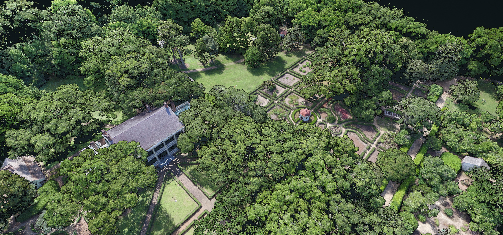

Point Cloud Repository

Welcome to the XYZ Point Cloud Repository, a collection of point clouds from laser scanning, photogrammetry, and neural radiance fields by Louisiana State University’s College of Art and Design.

Location: Hilltop Arboretum, Baton Rouge, Louisiana
Team: Brendan Harmon, Josef Horacek, Dan Cooke, & Matthew Cranney
Equipment: FireFLY Pro 6 with MicaSense RedEdge-M sensor
Hilltop Photogrammetry A Cajun Prairie Wildflower Meadow was established in 2020 at the LSU Hilltop Arboretum in Baton Rouge, Louisiana. Five fields have been restored as coastal tallgrass prairie, a highly endangered ecosystem of which only one percent remains intact. The evolution of the newly established meadow was recorded with a series of monthly aerial surveys by a drone with a multispectral sensor. Net annual biomass and carbon were computed from the time series of point clouds. The team lead for this project was Brendan Harmon. The team included Josef Horacek, Dan Cooke, and Matthew Cranney. The surveys were conducted with a FireFLY Pro 6 fixed wing drone with a MicaSense RedEdge-M sensor and 9 permanent ground control points. This project was supported by the LSU Center for GeoInformatics. The datasets are licensed Creative Commons Zero.
Point Cloud Time Series Viewers
Explore the time series of point clouds with Potree by expanding the point cloud viewer’s menu, expanding the scene tab, and turning on or off point cloud layers.
Point Cloud Datasets